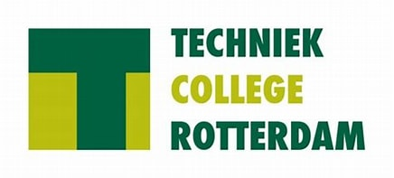
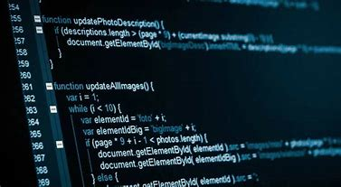

Over de opleiding
Software Developer
Document


Software developer
apps, website's en game's zijn projecten die je over de komende 3/4 jaar gaat aanpakken als software developer.
Je zorgt ervoor dat ze technisch goed werken. Je werkt vaak samen met collega's én met de klant.
Je luistert goed naar hun wensen en ideeën. En je gaat ermee aan de slag.
Wil jij apps ontwerpen?
Jij bedenkt, ontwerpt én bouwt computerprogramma’s, websites of games. Je kunt zelfstandig werken. Maar je vindt het ook leuk om samen te werken met developers en designers.
Ook ben je een echte doorzetter en een creatieve duizendpoot. Na deze opleiding laat jij wensen tot leven komen met technologie.
Woon je in Rotterdam-Zuid en wil je snel aan het werk? Deze opleiding heeft een AanDeBak-garantie.